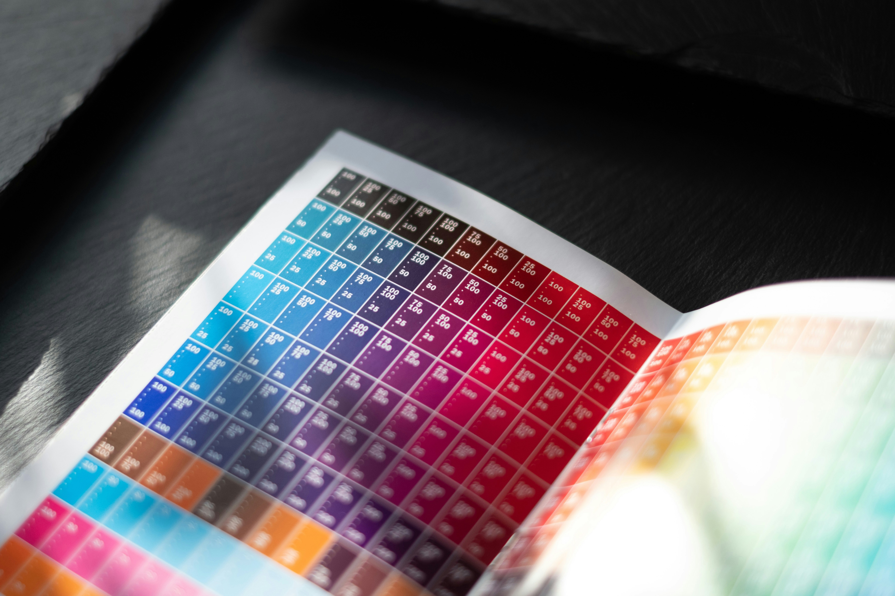
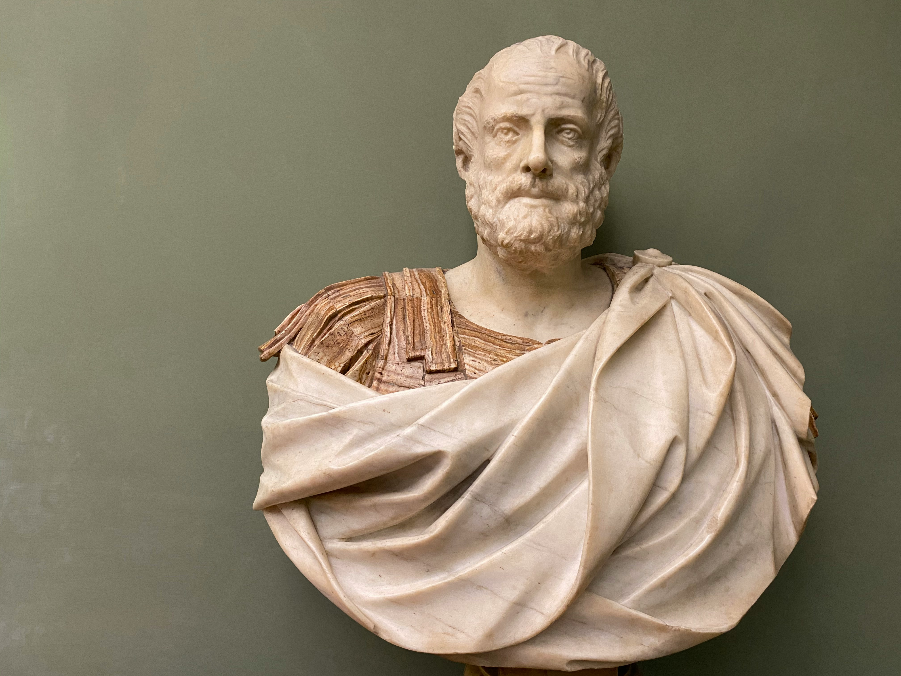

History of The Periodic Table
What is the Periodic Table?
The periodic table is a table of all the elements. The elements are arranged by their atomic numbers (the number of protons the element's nucleus has). On the periodic table, the rows are called periods and the columns are called groups. Each element is arranged according to these columns and rows, and the elements in the same row have similar properties. This is why it is called the periodic table.

Creator of the Periodic Table
French geologist Alexandre Émile-Béguyer de Chancourtois noticed that the elements, when order by their atomic weights, display similar properties at regular intervals. In 1862, he devised a three-dimensional chart, named the "telluric helix", after the element tellurium, which fell near the center of his diagram. With the elements arranged in a spiral on a cylinder by order of increasing atomic weight, de Chancourtois saw elements with similar properties lined up vertically. The original paper did not include a chart and used geological rather than chemical terms.
Russian chemist Dmitri Mendeleev arranged 63 elements by increasing atomic weight in serval columns noting the chemical properties between them. Mendeleev used the trends he saw to suggest that atomic weight of some elements were incorrect, and accordingly changed their placements. Mendeleev widely distributed oriented board sheets of the table to various chemists and continued to improve his ordering; in 1870, it ginned a tabular shape, and each column was given its own highest oxide, and in 1871, he further developed it and formulated what he termed the "law of periodicity". Some changes also occurred with new revisions, with some elements changing positions.
Early History
In the 5th century BC, Leucippus and his pupil Democritus proposed that all matter was composed of small invisible particles called atoms. Democritus believed, are too small to be detected by the human senses; they were infinite in numbers and came in infinitely many varieties, and they exist forever and that these atoms are constant in motion in a vacuum. What we perceived as water, fire, plants, or humans are merely combinations of atoms in the void.
Around 330 BCE, the Greek philosopher Aristotle proposed that everything is made up of a mixture of one or more roots, an idea originally suggested by Sicilian philosopher Empedocles. The four roots, which which the Athenian philosopher Plato called elements were earth, water, air, and fire.

Of all the 118 elements on the periodic table, nine of them (carbon, sulfur iron, copper, silver, tin, gold, mercury, and lead) have been known since antiquity, as they are found in their native form and are relatively simple to mine with primitive tools.
Other
Most of the information came from wikipedia - History of the Periodic Table.